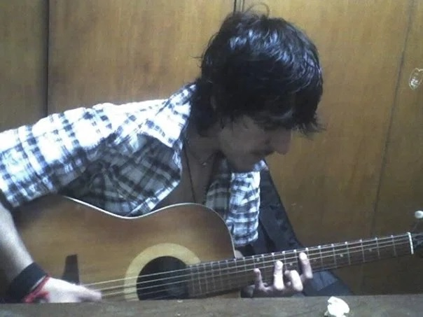

Unicorn in a Wizard Galley
When a dreamer looks into the mirror, what is reflected there? An ordinary self, or a character from some story? We possess the ability to find something in others that does not truly exist. It is the power to turn mint chocolate into an exotic flavor, to dress up a battered car as a classic, and to sublime adversity into resilience.
At seventeen, while writing the third track of my first album, the same thing happened to me. I transformed an ordinary sixteen-year-old girl into a princess. This is a song reconstructed after fifteen years.
Back then, when I barely understood the basics of performance, the melody I spun through improvisation was dedicated to my partner at the time. After we had been together for a while, I chose one photo from several I had of her. Staring at it, I began to write delicate, romantic notes.
Naturally, now that fifteen years have passed and I am reconstructing this song with elements of satire and art, the reality of that situation has finally come into sharp focus. The photo I held was one she had taken herself. Every angle was calculated; the lighting, the filters, even a hairstyle she never actually wore. It wasn't even her anymore.
Yet, my younger self chose that seemingly perfect image and drew inspiration from it, even though she was far from perfect in reality. But it wasn't just about that moment. Stepping back to see the bigger picture, I realized I did the same thing throughout that entire long relationship. From the beginning, she was flawed, unstable, dishonest, and strange. However, I constantly concealed those facts, amplifying a non-existent "sweet side" within my mind.
In other words, I "turned a demon into a Disney princess." Based on that idealized image, I wrote the song. In the end, it is a song dedicated to someone who does not exist.
Humans embrace illusions easily. It is simple to find what we want to project or what we want to have projected onto us. It is easy to decide how to fill our own voids and what expectations to harbor. We are all, in a way, magicians and illusionists. For ourselves or for others, we create fantasies (like telling a mother she still looks "young enough").

2007, Argentina. Buenos Aires. Playing the guitar, some time after the album release.
I had no way of knowing then, but that girl would bring the worst possible apocalypse to my life (I might touch upon this when discussing another album). Now, fifteen years later, as an adult, I can objectively look back at that magician—resembling a pathetic, low-ranking clerk struggling to love—and I have decided to completely transform this song.
The current title is "Unicorn in a Wizard Galley." Any magician can pull a rabbit out of a top hat, but pulling out a unicorn is another matter entirely. That is the work of an extraordinary magician, one exceptionally skilled at creating fantasies. That was me: a magician who, despite evidence always pointing to the opposite reality, saw a non-existent phantom in another and indulged in his own solitary illusion.
Over the years, the magician stopped being a mere illusionist and turned into an alchemist. I chose not to leave this as a romantic song; I decided to strip away the piano and the romance.
The current track resonates with the sounds of the bandoneon, the cello, and the water. It is a pirate’s adventure—a voyage across the high seas while a unicorn leaps from the magician’s hat. It is a satire of my youthful, excessive tendency to fantasize (a trait that still exists within me today, though in a more mature form).
The song, having wandered the seas in search of adventure, concludes with a single trace of the past. In the final five seconds, all other sounds fade away, and a toy-piano-like chime resonates. It is a sound that evokes the romantic original. It represents a fragment of what once existed—like the moment when a stuffed animal's seams unravel, exposing the raw fabric underneath. It is a satire of "what could have been, but ultimately never was."
In the end, while those years were deeply painful, I do not deny them. It was because of those magic tricks that I was able to become the alchemist I am today. An alchemist who transforms pain and happiness into music, into writing, or into video games. An alchemist of life, and of the abyss. One who no longer flees from alchemy, but exists within it.